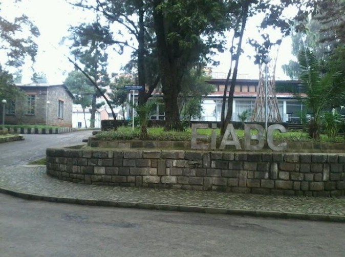

Ethiopian Institute of Architecture,Building Construction and City Developnent

EiABC, the Ethiopian Institute of Architecture, Building Construction and City Development was founded in 1954 as the “Ethio-Swedish Building College” and later merged with the Addis Ababa University. EiABC was reformed in 2010 as an autonomous Institute of Technology under the umbrella of Addis Ababa University to foster the development, capacity and competitiveness of industries in the field of Architecture, Design, Construction, Urbanism, Environmental Planning, Management and Technology. EiABC provides study programs at Bachelor, Master and PhD levels; EiABC conducts research and offers consultancies in all fields concerning the built environment. EiABC addresses a wide range of topics, such as private sector support, international standards and quality management, and professional education at university level. EiABC is a multidisciplinary think tank operating under the headline DESIGN AND SUSTAINABILITY, where experts from all fields in the built environment, covering a lot of different specialties and competences, can work together on design strategies for the future cities of Ethiopia, and the city of Addis Ababa. All our experts deal with the question of future urban developments, and all have the competence to carry out research on the highest professional level. Our direct involvement in the city development and urban planning is of high importance, and in the history, EiABC together with the City of Addis Ababa, had many successful co-operations. Recently, the institute’s scholars had taken an advisory role in the implementation of the Addis Sheger project and Entoto Park project.
Location

click here